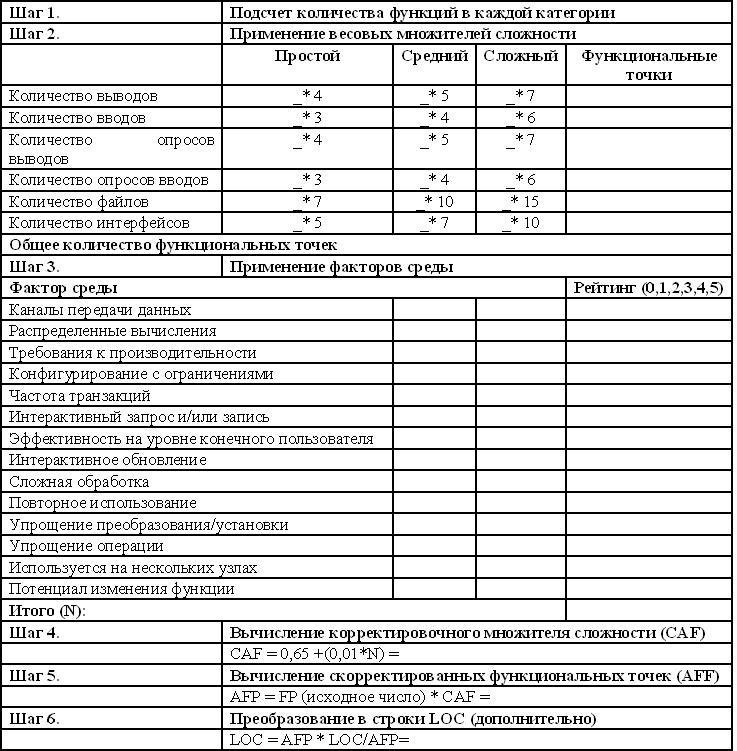
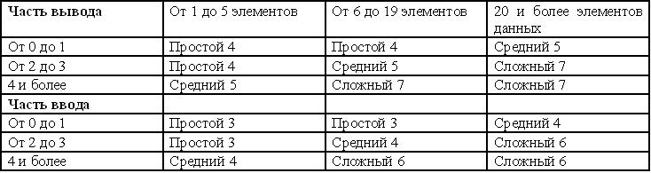
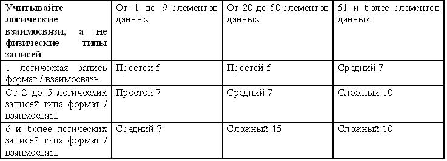
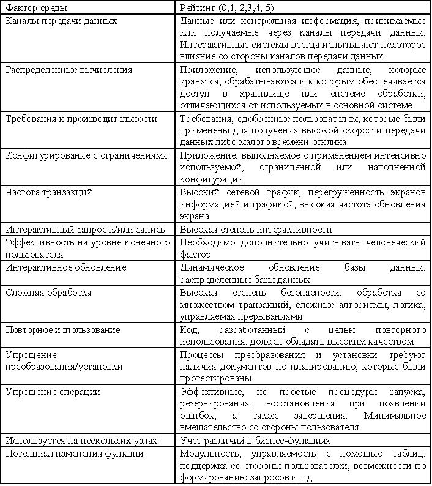
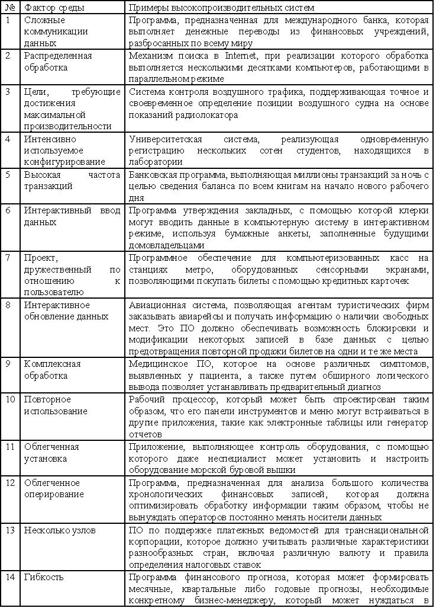
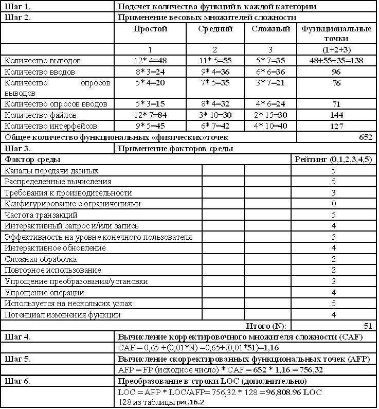

Метод функциональных точек
К сожалению, довольно часто производительность труда программистов оценивается количеством производимых LOC. И если средняя производительность программиста выросла с 200 LOC/месяц до 250 LOC/месяц, менеджер может прийти к заключению относительно роста производительности. Это впечатление зачастую является ложным, хотя в итоге будут поощряться те разработчики, которые производят больше строк LOC из расчета на разработку проекта. Более правильным будет награждать разработчиков не только за высокие показатели производительности, а за качественный безошибочный код. При оценке качества может применяться следующая формула:
количество дефектов / количество строк кода
Большая величина знаменателя будет свидетельствовать о высоком качестве кода.
Фаза кодирования в большинстве проектов обычно требует от 7% до 20% от общего объема трудозатрат. И конечно, более важным является качество программного кода, а не его объем. Результатом подобных размышлений является осознание необходимости другой единицы измерения. И в качестве такого метода может выступать метод функциональных точек.
Использование метода функциональных точек в качестве единиц измерения
Метод функциональных точек (Function point, FP) основывается на том, что размер ПО лучше всего оценивать в терминах количества и сложности функций, реализованных в данном программном коде, а не посредством количества строк кода. При использовании метода функциональных точек измеряются категории пользовательских бизнес-функций. При этом способ их определения является более методологичным, чем в случае подсчета строк LOC. В этом случае уместно сравнить программу с домом: площадь дома, выраженная в квадратных метрах, аналогична применению единиц измерения LOC; количество спален и туалетных комнат в доме аналогично применению в качестве единиц измерения функциональных точек.
Ранее применявшийся подход учитывал лишь размер ПО; нынешний подход учитывает размер и функциональные свойства.
Метод функциональных точек позволяет выполнять следующие задачи:
- оценивать категории пользовательских бизнес-функций;
- разрешить проблему, связанную с попыткой применения единиц измерения LOC на ранних стадиях жизненного цикла разработки;
- определять количество и сложность входных и выходных данных, запросы к базе данных, файлы либо структуры данных, а также внешние интерфейсы, связанные с программной системой.
Краткий обзор процесса применения функциональных точек:
- подсчитываются функции в каждой категории (перечень категории: вывод, ввод, опросы, структуры данных и интерфейсы);
- определяется сложность каждой функции - простая, средняя, сложная;
- устанавливаются требования для каждой из категорий;
- каждая функция умножается на соответствующий ей параметр, а затем суммируется с целью получения общего количества функциональных точек;
- производится преобразование функциональных точек в единицы измерения LOC с помощью следующей формулы:
LOC = Функциональные точки * ADJ * множитель преобразования
Здесь аббревиатура ADJ обозначает настройку общих характеристик приложения. Множитель преобразования основывается на статистических показателях для приложения и языка программирования, представляя среднее количество строк кода, применяемых для реализации простой функции. Какова же задача, выполняемая этим параметром? Потребность в нем обосновывается тем, что большинство автоматизированных инструментов, предназначенных для оценки трудозатрат, обычных затрат, а также составления графика, нуждаются в использовании LOC в качестве входных данных.
Процесс использования метода функциональных точек.
На рис. 16.3. представлен рабочий лист анализа по методу функциональных точек. Технологию заполнения и расчета расммотрим ниже

Рисунок 16.3 - Рабочий лист анализа по методу функциональных точек
Шаг 1. Подсчет функций в каждой категории
1.1. Общие указания
- Учитываются только функции, удовлетворяющие программным требованиям.
- Учитываются логические представления. Если в процессе ввода либо вывода требуется другая обрабатывающая логика, каждое из подобных логических представлений рассматривается как уникальная функциональная точка.
Оценка размера разрабатываемой системы непременно влечет за собой выполнение исследования основных системных компонентов. При этом возникает множество вопросов. Каков объем выводимых данных? Насколько важны входные данные при генерировании вывода? Каков объем хранимых данных?
- Учитывается количество элементов: вывод, ввод, опросы и файлы.
Предварительная архитектура обеспечивает основу для выполнения подобных действий. Некоторые предпочитают начинать с архитектуры в форме текстовых требований, однако использование архитектуры в графической форме является весьма полезным.
Весовые множители, применяемые ко всем видимым внешним аспектам ПО, представляют собой набор эмпирических констант, которые являются производными от данных испытаний и ошибок.
1.2. Учет выводимых данных
- Внешние выводы представляют собой данные, продуцируемые ПО с целью их передачи за пределы системы.
- Выводы представляют собой единицы деловой информации, которые генерируются ПО и предназначены для конечного пользователя (ориентированы на приложение). В качестве примеров выводов могут служить экранные данные, отчетные данные, сообщения об ошибках и т.д.
- Учитывается каждая уникальная единица вывода, которая покидает область приложения. Единица вывода будет уникальной в случае, если она имеет другой формат и/или требует другой логики обработки.
- Применяются структурированные методы в случае, если вывод представляет собой поток данных, сгенерированный ПО и предназначенный для конечного пользователя. Количество выводимых данных, выходящих за пределы области приложения, может быть легко подсчитано с помощью диаграммы источников/приемников. Каждый выводимый результат добавляется к одному из трех итоговых значений в зависимости от сложности этого результата: итог для простых выводимых результатов, итог для выводимых результатов средней сложности и итог для сложных выводимых результатов. Такое разделение позволяет применить весовой множитель для каждого из типов итога- сложный вывод требует больше усилий при создании по сравнению со средним или простым выводом.
Инструкции по определению уровня сложности приведены на рис.16.4

Рисунок 16.4 - Весовые множители для вывода/ввода, опросов, применяемые при анализе методом функциональных точек
Учет структур данных (файлы)
При подсчете структур данных (файлов) следует учитывать следующее:
- внутренние файлы представляют собой логические файлы в составе программы;
- структуры данных (ранее известные как "файлы") представляют собой первичную логическую группу пользовательских данных, которые постоянно находятся полностью внутри границ программной системы;
- структуры данных доступны для пользователей с помощью ввода, вывода, опросов либо интерфейсов.
Структуры данных делятся на простые, средние и сложные.
Инструкции по определению степени сложности приводятся в табл. на рис. 16.5.

Рисунок 16.5 - Весовые множители файлов в анализе методом функциональных точек
Подсчет количества интерфейсов
При подсчете количества интерфейсов следует учитывать следующее:
- внешние файлы представляют собой файлы, сгенерированные компьютером, которые используются программой;
- интерфейсы представляют собой данные (и систему управления), которые хранятся за пределами программной системы при выполнении оценки;
- структуры данных, разделяемые несколькими системами, учитываются в виде интерфейсов и структур данных;
- учитывается каждый поток данных и управления в любом направлении в качестве уникального интерфейса. Интерфейсы делятся на простые, средние и сложные.
Инструкции по определению уровня сложности приведены в таблице на рис.16.6.

Рисунок 16.6 - Весовые множители интерфейсов в анализе методом функциональных точек
Шаг 2. Применение весовых множителей сложности
- Необходимо умножить каждую величину определенного типа (простой, средний, сложный) внутри каждой категории (вывод, ввод, опросы [вывод/ввод], структура данных [файлы], интерфейсы) на соответствующий весовой множитель. Весовые множители, приведенные в таблицах рис. 16.4-16.6.
- В каждую категорию добавляются тоговые результаты, выраженные в количестве "физических функциональных точек".
Шаг 3. Применение факторов среды
Корректировка общего итога по физическим функциональным точкам происходит так, чтобы учитывать факторы среды, влияющие на процесс разработки ПО в целом. Известно, что многие аспекты среды могут оказывать влияние на процесс разработки программ. Некоторые из этих аспектов оказывают на проект положительное влияние, другие же "качают весы" в отрицательном направлении; все они рассматриваются с учетом их уникальности в применении к конкретному проекту. В таблице на рис. 16.7 приводится детализованное определение каждого из 14 факторов среды, либо оказывающих влияние множителей корректировки. Здесь же можно найти инструкции по выбору веса фактора среды.
Ниже приводится краткое описание выполнение процесса взвешивания в среде.
Используя материал таблицы рис.16.7, оцените каждый фактор по шкале от 0 до 5 (в данном случае 0 означает невозможность применения фактора). С целью получения "эффекта присутствия" на одном из краев спектра оценивания, в табл. 16.8 приводятся примеры программных систем с высоким рейтингом - показатели рейтинга от 4 до 5 на шкале.
Просуммируйте рейтинги факторов (Fn) с целью вычисления итогового фактора влияния среды (N).
N = sum (Fn)
Значения заполняются в рабочий лист анализа по методу функциональных точек рис. 16.3. Заполненный рабочий лист представлен на рис. 16.9.

Рисунок 16.7 - Описание факторов среды при анализе методом функциональных точек
Шаг 4. Вычисление множителя корректировки сложности (САF)
Уровень неопределенности оценок является функцией фазы жизненного цикла. Это поддерживает теорию эмпирических данных, согласно которой максимальная степень влияния факторов среды на итоги анализа функциональных точек может составлять +/- 35%. Причем рассматривается максимальная степень влияния, поскольку анализ функциональных точек выполняется в начале жизненного цикла. Как следствие, в этом случае существует максимальная вероятность неточности измерений. С целью компенсации подобной неопределенности в случае недостаточного уровня знаний множитель корректировки сложности (CAF) будет применяться к итоговым значениям факторов среды.

Рисунок 16.8 - Факторы среды при анализе методом функциональных точек, примеры высокопроизводительных систем
CAF = 0.65 +(0.01 *N) , где N является суммой взвешенных факторов среды.
Поскольку приходится иметь дело с 14 предполагаемыми факторами среды, каждый из которых имеет вес, изменяющийся в диапазоне от 0 до 5, наименьшее значение для N может быть 0 (ни один из 14 не применим); а наибольшее значение для N может быть 70 (каждый из 14 факторов имеет максимальный вес, равный 5). Исходя из этих граничных условий, приходим к выводу, что минимум САF = 0.65 + (0,01 * 0) = 0,65. Максимум САF = 0.65 + (0,01 * 70) = 1,35. (1.35 - 0.65 = 0.70). Ранняя оценка размеров и трудозатрат может отклоняться при условии использования фактора на величину +/- 35%.
Шаг 4 проиллюстрирован в таблице рис.16.9.
Шаг 5. Вычисление скорректированных функциональных точек. Скорректированные функциональные точки (AFP) - физические функциональные точки х САF. Шаг 5 рассматривается в в таблице рис.16.9.
Шаг 6. Преобразование в строки LOC (дополнительно).
Метод функциональных точек обеспечивает способ предварительной оценки размера потенциальных программ либо программных систем. При этом осуществляется анализ будущих функциональных свойств с пользовательской точки зрения. Языки программирования являются весьма различными с точки зрения их характеристик, однако существует некое среднее количество выполняемых операторов, требуемых для реализации одной функциональной точки.
Преобразование функциональных точек в строки LOC может потребоваться в силу следующих причин:
- с целью измерения и сравнения производительности либо размера программ, либо систем, которые были написаны на различных языках программирования;
- с целью использования стандартных единиц измерения для осуществления ввода данных в инструментальные средства оценки;
- для преобразования размера программы либо приложения, написанных на любом языке программирования, в эквивалентный размер в случае приложения, написанного на другом языке программирования.
Вплоть до завершения шагов 1-5 по отношению к данным может быть применено достаточно точное преобразование, позволяющее перейти от функциональных точек к LOC.
Частичное преобразование "функциональные точки/язык" показано в таблице рис.16.9.
Здесь иллюстрируется преобразование функциональных точек в LOC (первый и третий столбцы). В таблице перечислены далеко не все языковые преобразования, одобренные 11-TUG (этот перечень достаточно велик). Также следует отметить, что этот перечень постоянно пополняется по мере разработки новых языков программирования.
LOC = скорректированные функциональные точки * LOC на скорректированную функциональную точку AFP х # LOC на AFP = LОC
Пример завершенного рабочего листа анализа функциональных точек приводится в таблице рис.16.9.

Рисунок 16.9 - Заполненный рабочий лист анализа по методу функциональных точек
Преимущества анализа методом функциональных точек
- Этот метод может применяться на ранних стадиях жизненного цикла разработки программного обеспечения - размер ПО может определяться на фазе выдвижения требований либо на фазе разработки проекта;
- Не зависит от используемого языка программирования, технологии, а также техники, исключая некоторые корректировки, выполняемые на заключительной стадии.
- Метод функциональных точек обеспечивает надежную взаимосвязь с затрачиваемыми усилиями (в случае, если вы сможете определить корректную функцию для выполнения нужных измерений).
- Создание дополнительных функциональных точек из расчета на час (неделю либо месяц), является целью при достижении желательного уровня производительности (в отличие от создания дополнительных строк LOC из расчета на час (неделю либо месяц), что является не столь оправданным, пожалуй, даже парадоксальным).
- Для пользователей эти единицы измерения могут быть более привычными. При этом облегчается понимание степени влияния изменений функциональных требований.
- Может быть измерен уровень производительности проектов, написанных на различных языках программирования.
- Функциональные точки обеспечивают механизм, позволяющий выполнять отслеживание и мониторинг "сползания" области видимости. Функциональные точки могут учитываться часто и на ранних этапах - результаты подсчета функциональных точек могут сравниваться в конце этапов формирования требований, проведения анализа, разработки проекта, а также внедрения. Если количество функциональных точек увеличивается при каждом подсчете, это означает, что проект был лучше определен либо размер проекта был увеличен (это довольно опасно, если только график и/или средства будут перераспределены).
- Функциональные точки могут использоваться в системах, в которых реализован графический пользовательский интерфейс (GUI), в клиент-серверных системах, а также при объектно-ориентированной разработке.
- Функциональные точки могут учитываться как пользователями высшего уровня (клиентами или заказчиками), так и простыми техниками.
- Учитываются факторы среды. Так же, как и в случае с моделями определения размеров и оценивания, может выполняться адаптация и калибровка. Могут учитываться способы применения весов, а также факторы среды, которые в целом являются изменяемыми. Например, в промышленности полупроводников в случае, когда физические модули тестируются с применением ПО, компоненты устройств могут учитываться вместо вводов и выводов.
Недостатки анализа методом функциональных точек
- Используются субъективные оценки, вследствие чего возможны судебные разбирательства.
- Получаемые результаты зависят от технологии, используемой для их реализации.
- Многие модели затрат и трудозатрат зависят от показателя LOG, поэтому приходится преобразовывать функциональные точки.
- Требуются дополнительные исследования данных на базе LOG, отличные от исследований в случае данных, основанных на функциональных точках.
- Этот метод лучше применять после создания спецификации дизайна. Данный метод не очень хорошо подходит в случае с приложениями, не относящимися к классу MIS-приложений (в этом случае используйте точки свойств).
Примечание
На сегодняшний день традиционным представлением корпоративной системы автоматизации промышленного предприятия является так называемая пирамида автоматизации, которая включает следующие известные три типовых уровня:
- нижний уровень автоматизации ТП - автоматизированные системы диспетчерского управления SCADA (Supervisory Control And Data Acquisition), контроллеры и распределенные системы управления DCS (Distributed Control Systems) и разработанные на их основе АСУТП, автоматизированные системы управления объектами электротехнического оборудования (АСУЭТО), автоматизированные системы коммерческого учета электроэнергии (АСКУЭ), тепла (АСКУТ), газа (АСКУГ) и др.;
- средний уровень оперативного управления - системы оперативного управления производством MES (Manufacturing Execution System), в состав которых иногда включают системы управления фондами предприятия EAM (Enterprise Asset Management System);
- верхний уровень бизнес_систем управления ресурсами предприятия ERP (Enterprise Resource Planning System).
В дополнение к классической концепции информационной системы промышленной автоматизации, на стыке MES с системами нижнего уровня находятся системы MIS.
Зарубежные авторы наиболее часто обозначают данной аббревиатурой следующие понятия: Manufacturing Information System (информационная система производства) и Management Information System (информационная система управления), реже - Manufacturing Intelligence Systems (интеллектуальная система управления производством). Несмотря на, казалось бы, явные отличия в наборе используемых терминов, в рамках производственных предприятий все они объединяются одним общим определением:
MIS - это система сбора, обработки, хранения и трансляции данных о внутренних операциях и внешних событиях ТП производства, которая обеспечивает своевременный доступ и предоставление информации в соответствующем формате, необходимом для организации контроля, планирования и оперативного управления.
Таблица рис.16.2 представляет другой пример, в котором существующая программа может проверяться с целью подсчета количества функциональных точек. Например, если в вашем распоряжении имеется приложение, состоящее из 500 строк SLOG на C++, то исходя из этой таблицы, можно сделать вывод что в данном случае имеется 6 * 500 = 3000 функциональных точек.
Данная техника, именуемая "обратным огнем", может использоваться для создания приближенной оценки размеров целого набора приложений. Этот набор может выступать в виде интенсивно используемой хронологической базы данных, которая может применяться при оценке будущих проектов, а также для моделей калибровки размеров и оценки.
Какое количество функциональных точек должно содержаться в системе, чтобы она считалась очень большой? Некоторые крупномасштабные военные приложения содержат примерно 400 тыс. функциональных точек, полная система SAP/R3 - 300 тыс. функциональных точек, Windows 98 включает примерно 100 тыс. функциональных точек, and MVS фирмы IBM тоже около 100 тыс. функциональных точек. Фирма Software Productivity Research, Inc., сгенерировала эти данные на основе своей базы данных, включающей 8500 проектов из более чем 600 организаций.